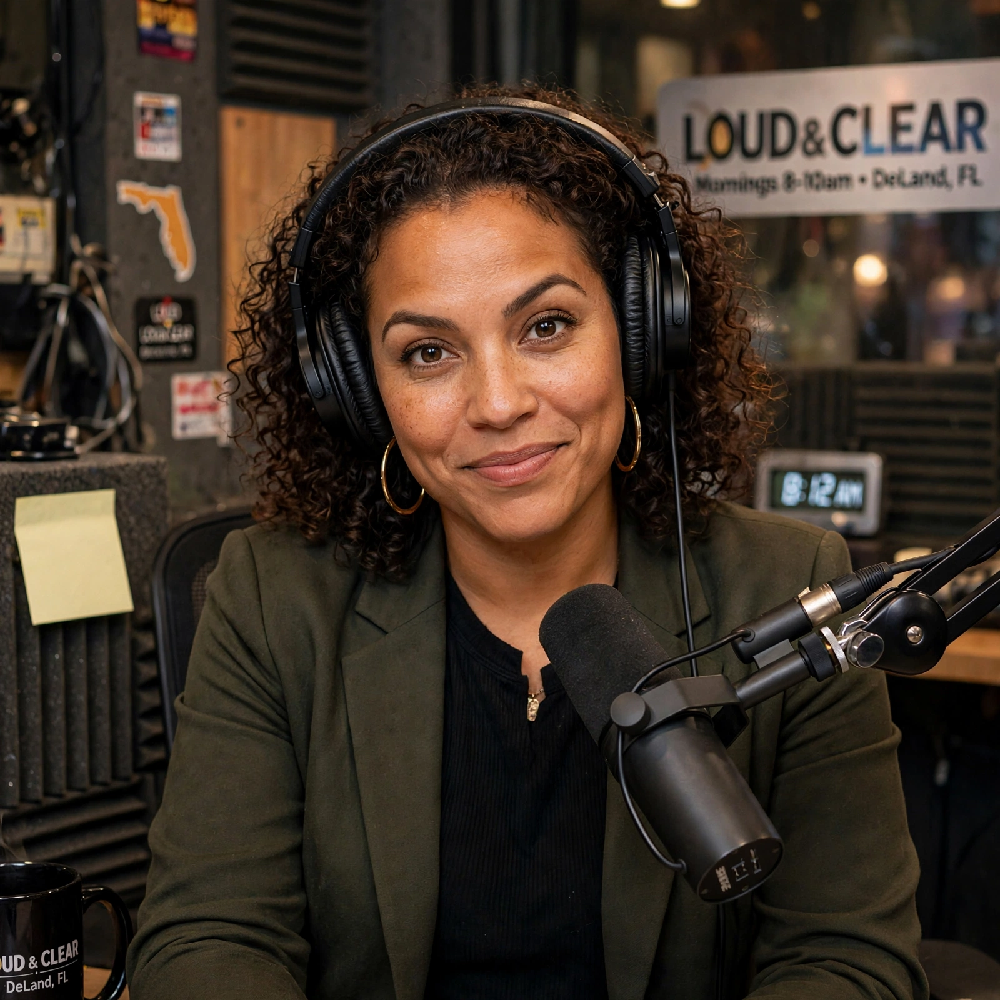
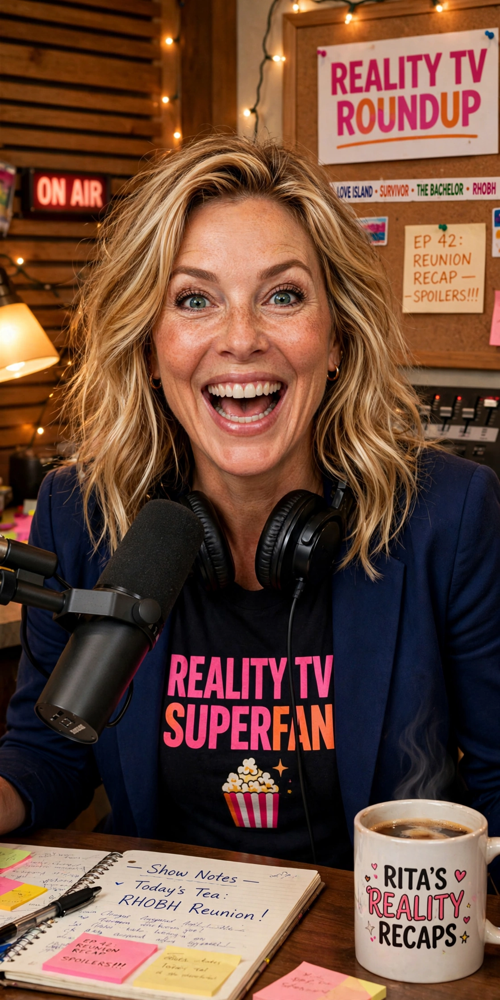
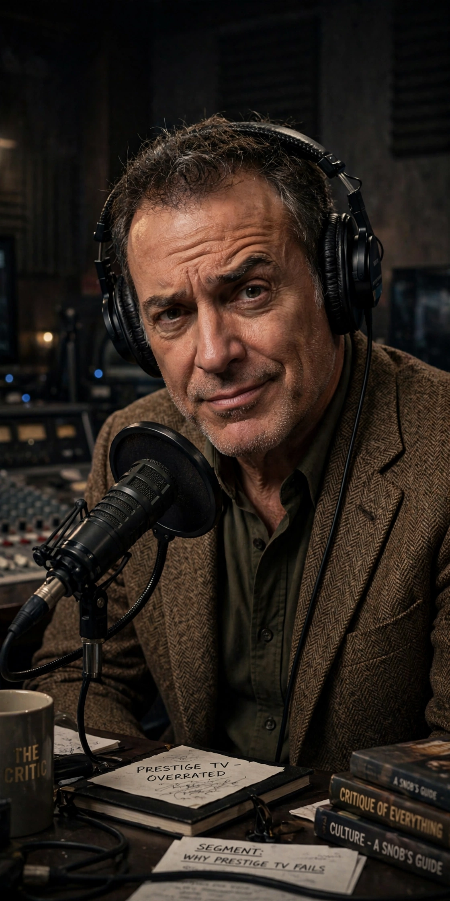
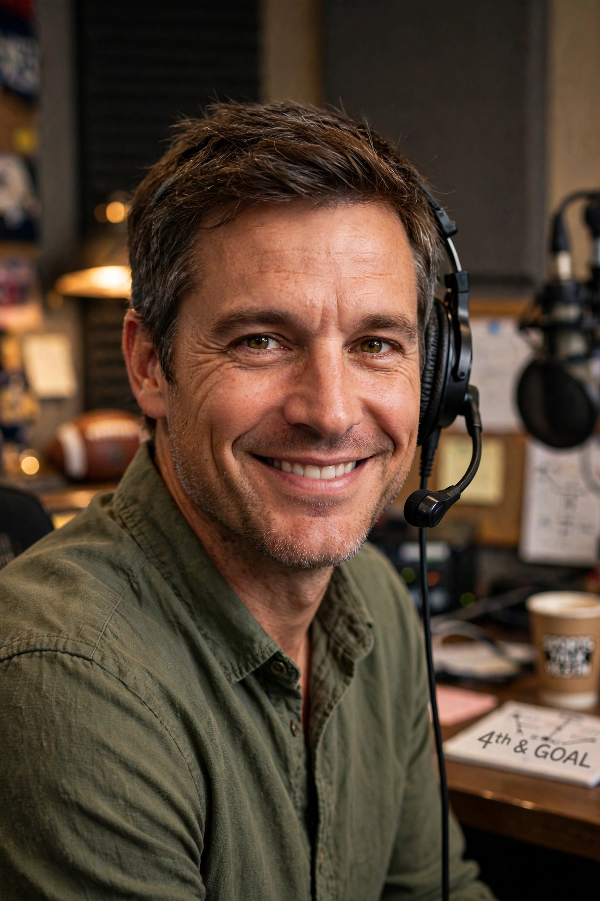

“The Heart and Soul of Volusia County”
Our 1970s-style sung jingle. One woman, singing it straight.
Four shows. Zero dead air. Every episode below, free to play.
Weekday mornings. Sharp, sarcastic, acerbic — Mack takes the day’s most explosive story and lets Volusia County fight it out on the lines.
6 Episodes →
Late mornings. Progressive, warm but relentless — Dana dismantles the weak arguments kindly, with dry-witted Sam on the boards.
4 Episodes →

Weekends. She’s a reality-TV superfan. He’s a prestige-TV snob. Their bickering is the engine — callers pick sides.
1 Episode →
Monday evenings. The ex-ballplayer declares takes, not thoughts — Bulldogs, Rays, Gators, and everything with a scoreboard.
1 Episode →The voices behind the mic, in living color.
The Danner Line — Promo
Loud & Clear — Promo
Spoiler Alert — Promo